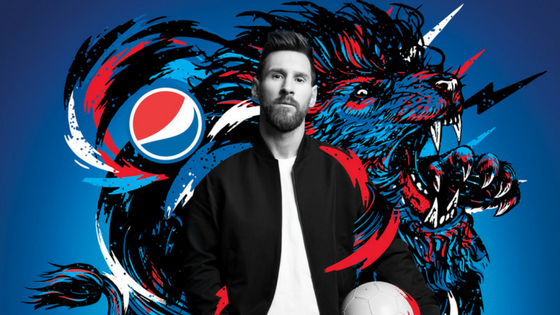
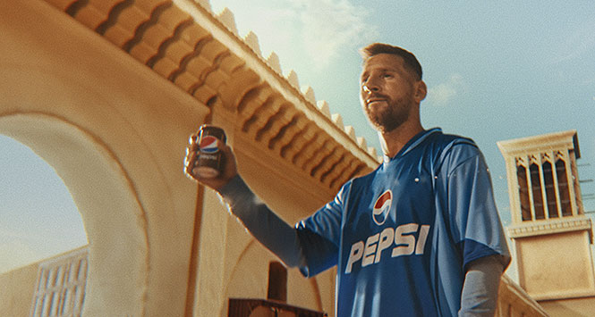

Pepsi es otra de las marcas globales que ha contado con Messi como su principal imagen en diversas campañas publicitarias. A través de anuncios llenos de energía, Messi ha aparecido en varias ediciones promocionando la bebida.
En las campañas de Pepsi Max, Messi aparece junto a otras estrellas del fútbol, destacando por su habilidad y sentido del humor, en situaciones donde el fútbol y la diversión son los protagonistas.
En la campaña global de Pepsi para el fútbol, Messi aparece en varios anuncios llenos de acción, donde la bebida es el centro de una competición amistosa entre jugadores de todo el mundo.
